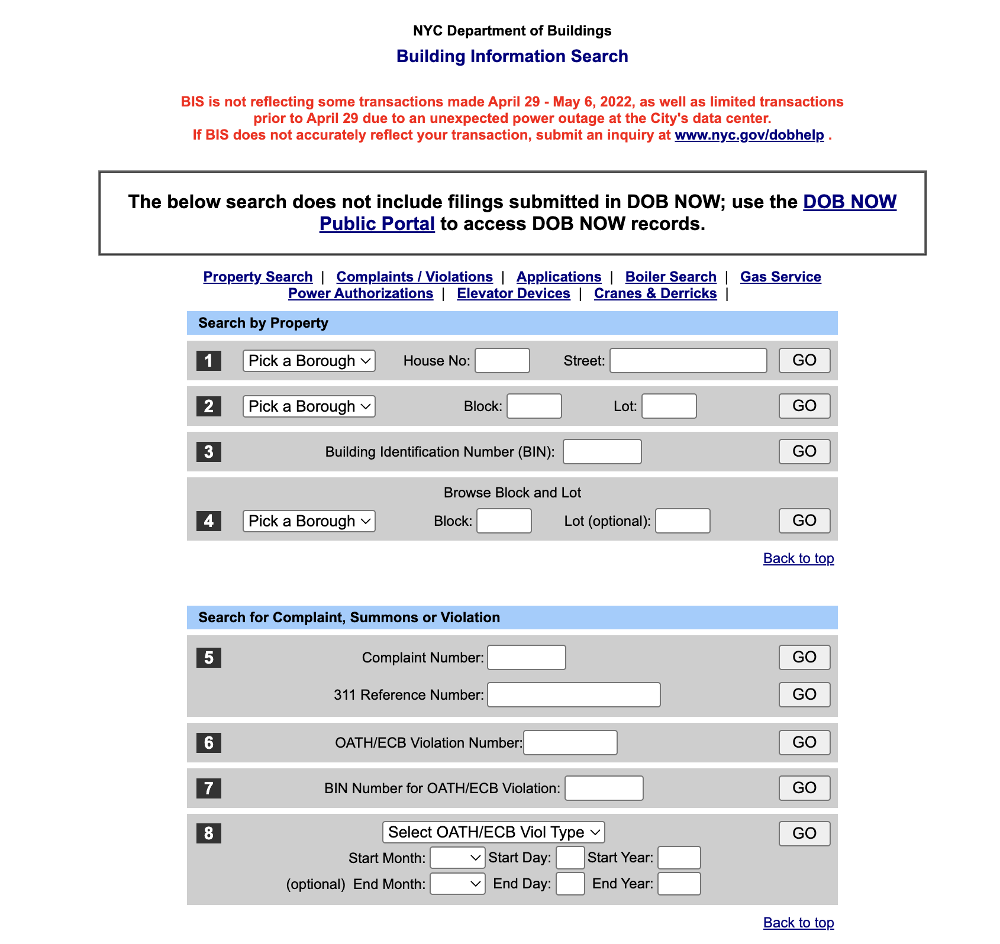

Accessibility Audit
I used the WebAIM WAVE tool to evaluate the site. Major findings included lack of alt text, missing form labels, and poor screenreader navigation due to layout tables.

Improving simplicity, usability, and accessibility for community use
Last year, I learned from a grassroots collective of Asian migrant workers that they used the NYC DOB Search site to check if their workplaces had city violations. While somewhat efficient, the site had severe usability and accessibility shortcomings.
I used the WebAIM WAVE tool to evaluate the site. Major findings included lack of alt text, missing form labels, and poor screenreader navigation due to layout tables.
To guide my redesign, I built a style guide inspired by NYC’s official branding.

I created wireframes for laptop, tablet, and mobile views to ensure responsive design.